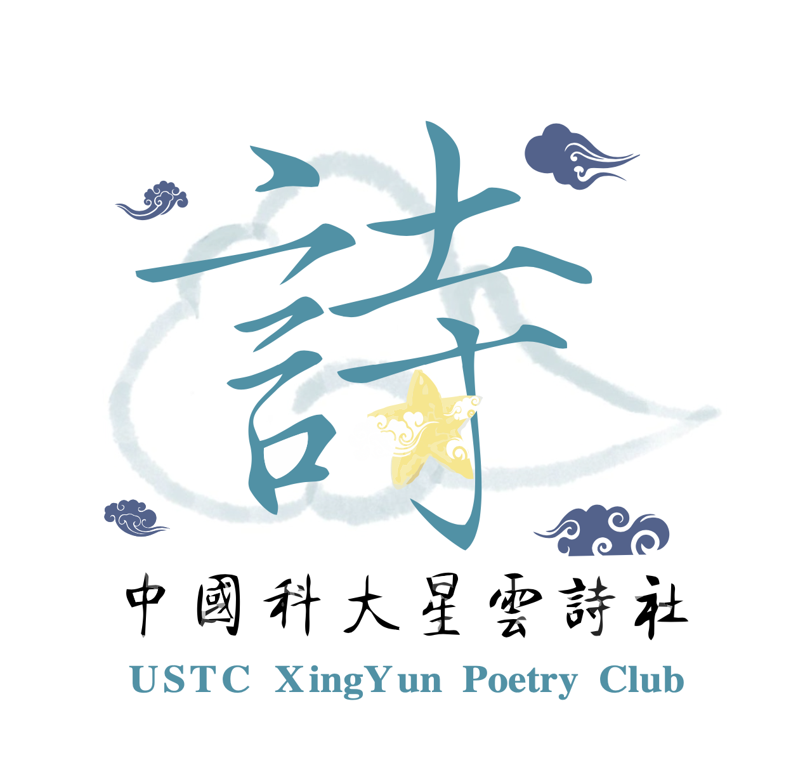
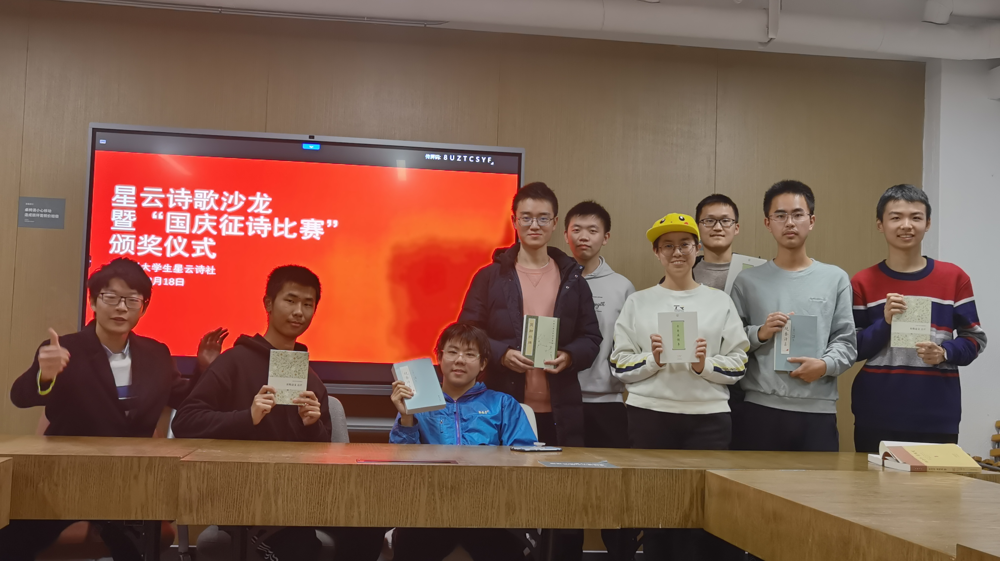
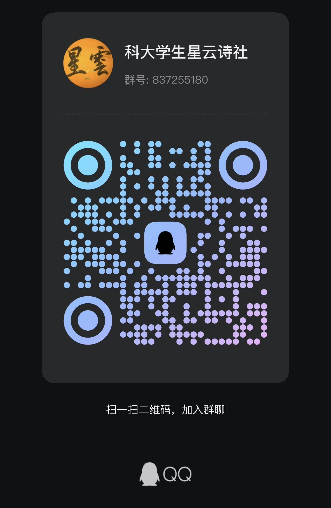

传承中国诗歌文化，传播诗歌魅力。 Preserving Chinese poetic culture and spreading its captivating charm.
中国科大星云诗社从 2020 年 11 月 18 日开始筹备，于 2021 年 9 月 5 日正式成立，是校内唯一一家专门研究中国诗歌——包括古体诗和现代诗——的社团。星云诗社人以"在科大传承诗歌文化，传播诗歌魅力"为己任，自创立以来就致力于校内诗歌艺术的普及和诗歌氛围的建设，鼓励、支持、引导社员们创作与鉴赏中国诗歌等文学作品，为科大培养具有深厚诗歌素养、全面发展的学子。
The USTC Xing Yun Poetry Club began preparations on November 18, 2020, and was officially established on September 5, 2021. It is the only club on campus devoted exclusively to the study of Chinese poetry — both classical and modern. Embracing the mission of "inheriting poetry culture at USTC and spreading the charm of poetry," the club has, since its founding, been committed to popularizing the art of poetry on campus and cultivating a vibrant poetic atmosphere.
— 完整大事记见 项目仓库 docs/ —
对为诗社发展做出重要贡献的社员，经集体评选后授予"荣誉社员"称号，永久记录于诗社章程。
本名单将定期更新，每年春季进行评审和补充。排名不分先后。

